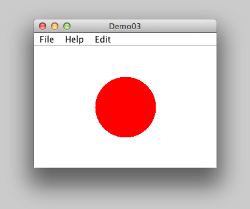
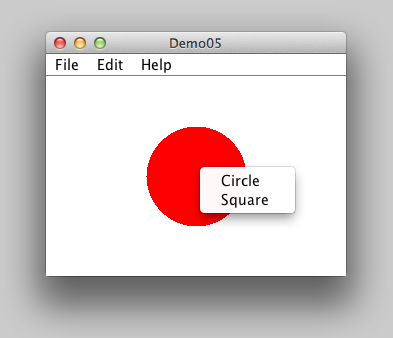

kontakt@lithehack.se
lithehack.se/koma
Tisdagar och torsdagar, 17-19
Skansholm Java direkt upplaga 6 eller 7 avsnitt 7.2, 12.4-7, 14.1
java.awt.Graphics
Standardklassen java.awt.Graphics kan användas för att rita enkla figurer med hjälp av ett antal olika metoder.
Linjer, ellipser, rektanglar, bilder, text, mm.
Används till exempel genom att skapa en subklass till JPanel.
public class MyPanel extends JPanel
{
// instansvariabler...
// konstruktorer...
// instansmetoder...
// rita figuren, måste finnas
public void paintComponent(Graphics g)
{
super.paintComponent(g);
g.drawAAA(...);
g.fillAAA(...);
}
// flera metoder möjliga...
}
paintComponent är protected, anropas endast indirekt via via repaint().
Tillämpat i exemplet ShapeDrawer för att rita cirklar och kvadrater.
Mer avancerad grafik i java.awt.Graphics2d.
Standardklassen javax.swing.Timer kan användas för att generera ActionEvents på tidsbasis.
Timer(m, l); – skapa en timer som genererar en händelse var m:te ms och registrera l som lyssnare.start(); – starta timernstop(); – stoppa timern
// Ny timer, anropar actionPerformed() i samma klass
private Timer timer = new Timer(100, this);
// ... massa grejer!
public void actionPerformed(ActionEvent e)
{
if (e.getSource() == btnStart)
{
timer.start();
}
else if (e.getSource() == timer)
{
size += 10;
size %= 160;
drawer.setShape(shape, size, color);
}
}
En menyrad läggs till på JFrame.
En förenklad klasshiearki för menyer:
javax.swing.JComponent
javax.swing.JMenuBarjavax.swing.JMenuItem
javax.swing.JMenujavax.swing.JCheckBoxMenuItemjavax.swing.JRadioButtonMenuItemjavax.swing.JPopupMenu
Motsvarar klasserna JButton, JCheckBox och JRadioButton.
JMenuBar
JMenuBar(); — skapa en menyradadd(myMenu); — placera menyn myMenu i menyraden, vänster till höger
Menyraden myMenuBar placeras i fönstret w med w.setMenuBar(myMenuBar);.
JMenu
JMenu("title"); — skapa meny med titeln titleadd(menuItem); — lägg till menyalternativet menuItem i menyn. Sker uppifrån och ned.addSeparator(); — lägg till en horizontell linje i menyn.Menyalternativen kan exempelvis vara
JMenuItem — ett vanligt menyalternativJCheckBoxMenuItem — en kryssrutaJRadioButtonMenuItem — en radioknappJMenu — en submeny
private JMenuBar mnb = new JMenuBar();
private JMenu menuFile = new JMenu("File");
private JMenu menuEdit = new JMenu("Edit");
private JMenu menuHelp = new JMenu("Help");
public Demo03()
{
setJMenuBar(mnb);
mnb.add(menuFile);
mnb.add(menuHelp);
mnb.add(menuEdit);
mniCircle.addActionListener(this);
mniSquare.addActionListener(this);
mnuEdit.add(mniCircle);
mnuEdit.add(mniSquare);
Aka. Hur du får användaren att känna sig riktigt hemma i ditt program
// ALT + C
menuItem.setMnemonic("C");
// CTRL + C
menuItem.setAccelerator(
KeyStroke.getKeyStroke(
KeyEvent.VK_C, ActionEvent.CTRL_MASK));
// CTRL-G eller ^G
mniCircle.setAccelerator(
KeyStroke.getKeyStroke(
KeyEvent.VK_G, ActionEvent.CTRL_MASK));
// CTRL-H eller ^H
mniSquare.setAccelerator(
KeyStroke.getKeyStroke(
KeyEvent.VK_H, ActionEvent.CTRL_MASK));
JPopupMenu
JPopupMenu("title"); — skapa en popup-meny med titeln titleshow(c, x, y); — visa menyn för komponenten c på positioinen (x, y)
Popupmeny pmn kopplas till en komponent c:
c.add(pmn);
Koppla muslyssnare l till komponent c:
c.addMouseListener(l);
l är en klass, måste implementera MouseListener direkt eller via standardklassen MouseAdapter.
MouseEvent
isMetaDown(); — bool, höger musknappgetComponent(); — retunerar komponenten musmarkören är övergetX(); och getY(); — koordinater för musmarkören
private JPopupMenu pmnEdit = new JPopupMenu("Edit");
// ...
drawer.addMouseListener(new PopupHandler());
// ...
private class PopupHandler extends MouseAdapter
{
public void mousePressed(MouseEvent e)
{
if (e.isMetaDown()) // Höger musknappt nedtryckt?
{
pmnEdit.show(e.getComponent(), e.getX(), e.getY());
}
}
}
Nästa föreläsning: Android